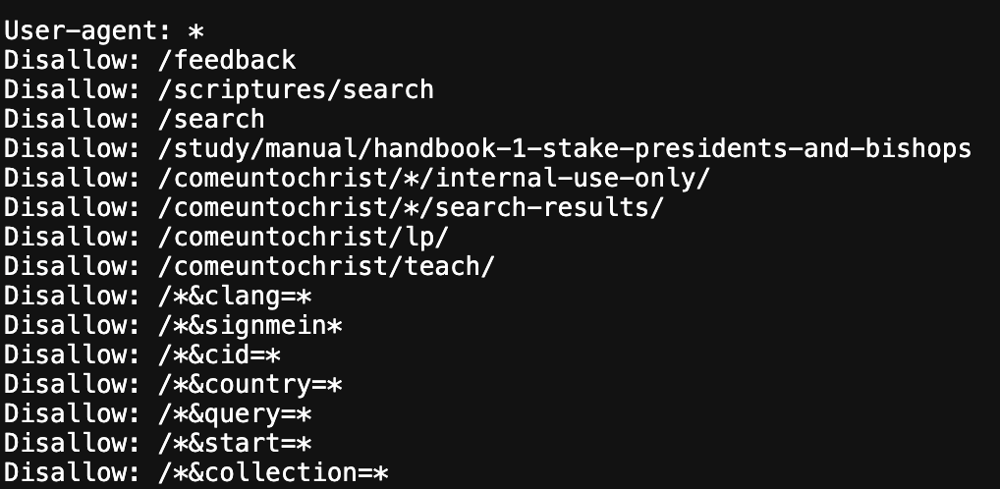
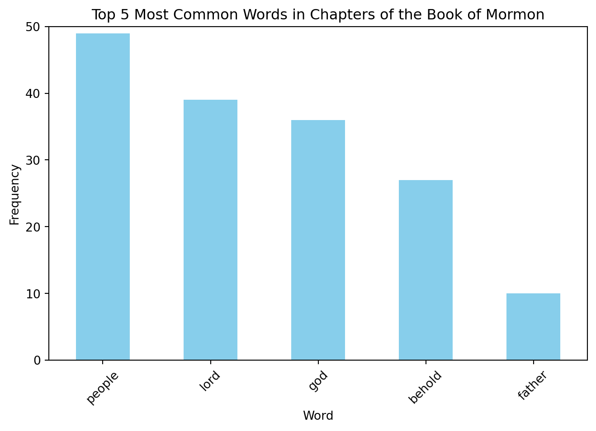
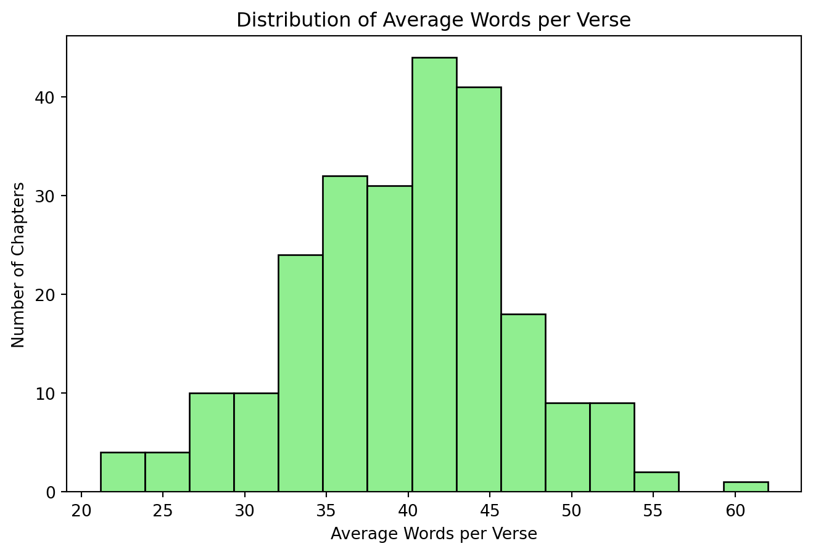

Code
import pandas as pd
df = pd.read_csv("book_of_mormon_dataset.csv")
# Output: The number of rows in the DataFrame
len(df) 239Noah Champagne
November 12, 2025
This blog post showcases how I used the Python package Beautiful Soup to curate a custom dataset. Finding a website to scrape can be challenging, as many sites with interesting data—such as Rate My Professors and other review platforms—disallow scraping.
I ultimately decided to scrape the Book of Mormon, found on the Church of Jesus Christ of Latter-day Saints’ website. My goal was to gather data on each chapter, including the chapter summary, the average verse length per chapter, and the most frequent word in each chapter. I thought this would be interesting both as a personal project and as an example for others wanting to learn how to use Beautiful Soup to scrape other HTML-based texts.
Before scraping any website, it’s important to review the site’s robots.txt file—a plain text file that provides instructions about which pages may or may not be crawled or scraped.
The Church of Jesus Christ of Latter-day Saints’ robots.txt disallows scraping of certain parts of its website, such as /scriptures/search and /study/manual/handbook-1, but does not prohibit access to /study/scriptures/bofm?lang=eng, which is the section containing the Book of Mormon. See below for a portion of the robots.txt file:

There was also no rate limit or time-delay restriction specified between requests. Based on this information, I determined that scraping this data was ethically acceptable.
For this project, I used the following Python libraries:
requests for making HTTP requests.BeautifulSoup for xtracting data from web pages.pandas for analyzing and manipulating data.re to search, match, and manipulate text using regular expressions.collections.Counter, a tool I hadn’t used before, which counts the occurrences of items in a list or sequence. This was helpful for finding the most common word in each chapter.Many words appear frequently but are not meaningful for analysis, including prepositions, transition words, and other common words in older texts. I labeled these as trivial_words in my code. This allowed me to focus on the interesting, non-trivial words that were most common.
To loop through each book in the Book of Mormon, I created a list called books and a base_url to append each book to, as shown below:
Using the requests library with UTF-8 character encoding (to avoid strange characters like —), I inspected the HTML to locate the content of interest:
Chapter summaries in class_="study-summary"
Scripture verses in class_="verse"
I also removed footnotes to get plain text by targeting the class_="study-note-ref" elements and using the decompose() method to delete them.
This process was repeated for each chapter in each Book of Mormon book if the number of verses was greater than zero. If a chapter did not exist, the URL redirected to the book’s main page (showing all chapters and summaries with no verses), which allowed the code to break out of the loop and move to the next book.
Once all the data was gathered, it was compiled into a pandas DataFrame that looked like the following table:
| Book | Chapter | Summary | Num Verses | Most Common Word | Avg Words per Verse |
|---|---|---|---|---|---|
| 1 Nephi | 1 | Nephi begins the record of his people … | 20 | father | 43.9 |
| 1 Nephi | 2 | Lehi takes his family … | 24 | lord | 35.29 |
| 1 Nephi | 3 | Lehi’s sons return to Jerusalem … | 31 | lord | 34.19 |
| 1 Nephi | 4 | Nephi slays Laban … | 38 | laban | 33.05 |
Now that we have a dataset, we can perform some Exploratory Data Analysis (EDA). Click on the arrow beside the word code to view the code chunks for each analysis.
We want to find out how many observations (rows) the dataframe contains:
239We want to know the top 5 most common non-trivial words that show up in the Book of Mormon:
import pandas as pd
import matplotlib.pyplot as plt
top_words = df['most_common_word'].value_counts().head(5)
plt.figure(figsize=(8,5))
top_words.plot(kind='bar', color='skyblue')
plt.title("Top 5 Most Common Words in Chapters of the Book of Mormon")
plt.xlabel("Word")
plt.ylabel("Frequency")
plt.xticks(rotation=45)
plt.ylim(0, 50)
plt.show()
It’s interesting that “people” is the most common non-trivial word per chapter, appearing nearly 50 times. Being a religious text, it makes sense that “Lord” and “God” are the next most common. I find it insightful that “behold” was relatively common, suggesting that the Book of Mormon emphasizes the importance of listening to God and His commandments.
We can also find some summary statistics about the data:
mean_verses = df['num_verses'].mean()
std_verses = df['num_verses'].std()
print(f"Mean number of verses per chapter is {mean_verses:.2f} with a standard deviation of {std_verses:.2f}")
mean_words = df['avg_words_per_verse'].mean()
std_words = df['avg_words_per_verse'].std()
print(f"The mean words per verse is {mean_words:.2f} with a standard deviation of {std_words:.2f}")Mean number of verses per chapter is 27.63 with a standard deviation of 11.92
The mean words per verse is 39.85 with a standard deviation of 6.70A histogram of the average words per verse looks like:

Is there a correlation between the number of verses in a chapter and the average words per verse? In other words, do longer chapters have longer verses? Let’s see:
| num_verses | avg_words_per_verse | |
|---|---|---|
| num_verses | 1.000000 | 0.010976 |
| avg_words_per_verse | 0.010976 | 1.000000 |
The result indicates there’s almost no linear relationship between chapter length (number of verses) and the average number of words per verse. This means longer chapters don’t necessarily have longer verses, and shorter chapters don’t necessarily have shorter verses.
This is easily visualized by the scatterplot below:
I hope that this blog was able to help you understand a little bit more about the web scraping process. My code that I used to scrape the Book of Mormon, as well as the CSV file that it curated, can be found at: this GitHub repository
Try to scrape your own HTML-based book! Some possible options include: The New Testament and Hamlet, but make sure you read the robots.txt of any website to determine whether or not you should scrape it.
Further resources for learning more about web scraping can be found below:
---
title: "Data Acquisition Blog"
author: "Noah Champagne"
date: "2025-11-12"
format:
html:
code-fold: true
toc: true
---
## Introduction
This blog post showcases how I used the Python package `Beautiful Soup` to curate a custom dataset. Finding a website to scrape can be challenging, as many sites with interesting data—such as **Rate My Professors** and other review platforms—disallow scraping.
I ultimately decided to scrape the *Book of Mormon*, found on the [Church of Jesus Christ of Latter-day Saints’ website](https://www.churchofjesuschrist.org/study/scriptures/bofm?lang=eng). My goal was to gather data on each chapter, including the chapter summary, the average verse length per chapter, and the most frequent word in each chapter. I thought this would be interesting both as a personal project and as an example for others wanting to learn how to use Beautiful Soup to scrape other HTML-based texts.
## Ethics
Before scraping any website, it’s important to review the site’s `robots.txt` file—a plain text file that provides instructions about which pages may or may not be crawled or scraped.
The **Church of Jesus Christ of Latter-day Saints’** `robots.txt` disallows scraping of certain parts of its website, such as `/scriptures/search` and `/study/manual/handbook-1`, but does **not** prohibit access to `/study/scriptures/bofm?lang=eng`, which is the section containing the *Book of Mormon*. See below for a portion of the `robots.txt` file:

There was also no rate limit or time-delay restriction specified between requests. Based on this information, I determined that scraping this data was ethically acceptable.
## How the Data Was Gathered
For this project, I used the following Python libraries:
- `requests` for making HTTP requests.
- `BeautifulSoup` for xtracting data from web pages.
- `pandas` for analyzing and manipulating data.
- `re` to search, match, and manipulate text using regular expressions.
- `collections.Counter`, a tool I hadn’t used before, which counts the occurrences of items in a list or sequence. This was helpful for finding the most common word in each chapter.
```python
import requests
from bs4 import BeautifulSoup
import pandas as pd
from collections import Counter
import re
```
Many words appear frequently but are not meaningful for analysis, including prepositions, transition words, and other common words in older texts. I labeled these as `trivial_words` in my code. This allowed me to focus on the interesting, non-trivial words that were most common.
To loop through each book in the *Book of Mormon*, I created a list called `books` and a `base_url` to append each book to, as shown below:
```python
books = [
"1-ne", "2-ne", "jacob", "enos", "jarom", "omni", "w-of-m",
"mosiah", "alma", "hel", "3-ne", "4-ne", "morm", "ether", "moro"
]
base_url = "https://www.churchofjesuschrist.org/study/scriptures/bofm"
```
Using the requests library with UTF-8 character encoding (to avoid strange characters like —), I inspected the HTML to locate the content of interest:
Chapter summaries in `class_="study-summary"`
Scripture verses in `class_="verse"`
I also removed footnotes to get plain text by targeting the `class_="study-note-ref"` elements and using the `decompose()` method to delete them.
This process was repeated for each chapter in each Book of Mormon book if the number of verses was greater than zero. If a chapter did not exist, the URL redirected to the book’s main page (showing all chapters and summaries with no verses), which allowed the code to break out of the loop and move to the next book.
Once all the data was gathered, it was compiled into a pandas DataFrame that looked like the following table:
| Book | Chapter | Summary | Num Verses | Most Common Word | Avg Words per Verse |
|-------|----------|----------|-------------|------------------|---------------------|
| 1 Nephi | 1 | Nephi begins the record of his people ... | 20 | father | 43.9 |
| 1 Nephi | 2 | Lehi takes his family ...| 24 | lord | 35.29 |
| 1 Nephi | 3 | Lehi’s sons return to Jerusalem ... | 31 | lord | 34.19 |
| 1 Nephi | 4 | Nephi slays Laban ... | 38 | laban | 33.05 |
## Exploratory Data Analysis (EDA)
Now that we have a dataset, we can perform some **Exploratory Data Analysis (EDA)**. Click on the arrow beside the word `code` to view the code chunks for each analysis.
---
### **1. Dataset Dimensions**
We want to find out how many **observations (rows)** the dataframe contains:
```{python}
import pandas as pd
df = pd.read_csv("book_of_mormon_dataset.csv")
# Output: The number of rows in the DataFrame
len(df)
```
---
### **2. Top 5 Most Common Words**
We want to know the **top 5 most common non-trivial words** that show up in the *Book of Mormon*:
```{python}
import pandas as pd
import matplotlib.pyplot as plt
top_words = df['most_common_word'].value_counts().head(5)
plt.figure(figsize=(8,5))
top_words.plot(kind='bar', color='skyblue')
plt.title("Top 5 Most Common Words in Chapters of the Book of Mormon")
plt.xlabel("Word")
plt.ylabel("Frequency")
plt.xticks(rotation=45)
plt.ylim(0, 50)
plt.show()
```
It's interesting that "**people**" is the most common non-trivial word per chapter, appearing nearly 50 times. Being a religious text, it makes sense that "**Lord**" and "**God**" are the next most common. I find it insightful that "**behold**" was relatively common, suggesting that the *Book of Mormon* emphasizes the importance of listening to God and His commandments.
---
### **3. Summary Statistics**
We can also find some summary statistics about the data:
```{python}
mean_verses = df['num_verses'].mean()
std_verses = df['num_verses'].std()
print(f"Mean number of verses per chapter is {mean_verses:.2f} with a standard deviation of {std_verses:.2f}")
mean_words = df['avg_words_per_verse'].mean()
std_words = df['avg_words_per_verse'].std()
print(f"The mean words per verse is {mean_words:.2f} with a standard deviation of {std_words:.2f}")
```
A **histogram** of the average words per verse looks like:
```{python}
import matplotlib.pyplot as plt
plt.figure(figsize=(8,5))
plt.hist(df['avg_words_per_verse'], bins=15, color='lightgreen', edgecolor='black')
plt.title("Distribution of Average Words per Verse")
plt.xlabel("Average Words per Verse")
plt.ylabel("Number of Chapters")
plt.show()
```
---
### **4. Correlation Analysis: Verse Length**
Is there a **correlation** between the number of verses in a chapter and the average words per verse? In other words, do longer chapters have longer verses? Let's see:
```{python}
# Output: Correlation matrix for the two columns
df[['num_verses', 'avg_words_per_verse']].corr()
```
The result indicates there's almost **no linear relationship** between chapter length (number of verses) and the average number of words per verse. This means longer chapters don't necessarily have longer verses, and shorter chapters don't necessarily have shorter verses.
This is easily visualized by the **scatterplot** below:
```{python}
import matplotlib.pyplot as plt
plt.figure(figsize=(8,5))
plt.scatter(df['num_verses'], df['avg_words_per_verse'], alpha=0.6)
plt.title("Number of Verses vs. Average Words per Verse")
plt.xlabel("Number of Verses")
plt.ylabel("Average Words per Verse")
plt.show()
```
## Conclusion
I hope that this blog was able to help you understand a little bit more about the **web scraping** process. My code that I used to scrape the *Book of Mormon*, as well as the CSV file that it curated, can be found at: [this GitHub repository](https://github.com/nchamp22/Data-Acquisition-Blog)
Try to scrape your own HTML-based book! Some possible options include: [The New Testament](https://www.churchofjesuschrist.org/study/scriptures/nt?lang=eng) and [Hamlet](https://www.folger.edu/explore/shakespeares-works/hamlet/read/1/1/), but **make sure you read the `robots.txt` of any website to determine whether or not you should scrape it.**
Further resources for learning more about web scraping can be found below:
* [Requests Documentation](https://requests.readthedocs.io/en/latest/)
* [Beautiful Soup Documentation](https://beautiful-soup-4.readthedocs.io/en/latest/)
* [Beautiful Soup Crash Course (YouTube)](https://www.youtube.com/watch?v=XVv6mJpFOb0)